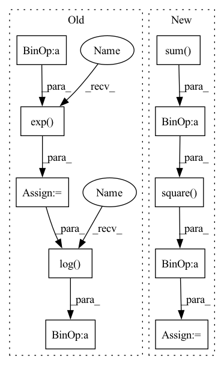

Pattern ID :12445

Before Change
normalization = ctx.dims.sizes.batch / tgt.size
tgt = one_hot(tgt.astype(src.dtype), src.shape[-1])
shifted = src - lax.stop_gradient(src).max(-1, keepdims=True)
exp_shifted = jnp.exp(shifted)
sum_exp = exp_shifted.sum(-1, keepdims=True)
out = ((jnp.log(sum_exp) - shifted) * tgt).sum(tuple(range(1, tgt.ndim)))
return lax.pmean(out * normalization, ParallelAxes.model)
After Change
src = lax.psum(src, ParallelAxes.model)
max_logit = lax.stop_gradient(src).max(-1, keepdims=True)
log_z = lax.log(lax.exp(src - max_logit).sum(-1, keepdims=True)) + max_logit
loss = (log_z - src) * one_hot(tgt.astype(src.dtype), src.shape[-1])
loss = loss.sum() / tgt.size
if ctx.training.z_loss:
loss += jnp.square(log_z) * (ctx.training.z_loss / tgt.size)
return loss
In pattern: SUPERPATTERN
Frequency: 3
Non-data size: 10
Instances
Fragment ID: 42370183
Project Name: homebrewnlp/homebrewnlp-jax
Commit Name: f0031ea763d3a229cac4e176f5d191444555669e
Time: 2022-02-20
Author: 39779310+ClashLuke@users.noreply.github.com
File Name: src/model.py
M Class Name: AnonimousClass
N Class Name: AnonimousClass
M Method Name: cross_entropy_loss(3)
N Method Name: cross_entropy_loss(3)
M Parent Class:
N Parent Class:
M File Name: src/model.py
N File Name: src/model.py
M Start Line: 195
M End Line: 204
N Start Line: 195
N End Line: 203
'>
Before Change
normalization = ctx.dims.sizes.batch / tgt.size
tgt = one_hot(tgt.astype(src.dtype), src.shape[-1])
shifted = src - lax.stop_gradient(src).max(-1, keepdims=True)
exp_shifted = jnp.exp(shifted)
sum_exp = exp_shifted.sum(-1, keepdims=True)
out = ((jnp.log(sum_exp) - shifted) * tgt).sum(tuple(range(1, tgt.ndim)))
return lax.pmean(out * normalization, ParallelAxes.model)
After Change
src = lax.psum(src, ParallelAxes.model)
max_logit = lax.stop_gradient(src).max(-1, keepdims=True)
log_z = lax.log(lax.exp(src - max_logit).sum(-1, keepdims=True)) + max_logit
loss = (log_z - src) * one_hot(tgt.astype(src.dtype), src.shape[-1])
loss = loss.sum() / tgt.size
if ctx.training.z_loss:
loss += jnp.square(log_z) * (ctx.training.z_loss / tgt.size)
return loss
'>
Fragment ID: 42370148
Project Name: homebrewnlp/olmax
Commit Name: f0031ea763d3a229cac4e176f5d191444555669e
Time: 2022-02-20
Author: 39779310+ClashLuke@users.noreply.github.com
File Name: src/model.py
M Class Name: AnonimousClass
N Class Name: AnonimousClass
M Method Name: cross_entropy_loss(3)
N Method Name: cross_entropy_loss(3)
M Parent Class:
N Parent Class:
M File Name: src/model.py
N File Name: src/model.py
M Start Line: 195
M End Line: 204
N Start Line: 195
N End Line: 203
'>
Before Change
// Numerical stability mixture and loglik
log_max = torch.amax(log, dim=2, keepdim=True) // [1,1,K] (collapsed joints)
lik = weights * torch.exp(log - log_max) // Take max
loglik = torch.log(torch.sum(lik, dim=2, keepdim=True)) + log_max // Return max
loglik = loglik * mask // replace with mask
loss = -torch.mean(loglik)
After Change
loglik = torch.logsumexp((torch.log(weights) + log_pi), dim=2, keepdim=True)
loglik = loglik * mask
mean = torch.sum(weights * lambdas, axis=-1, keepdims=True)
reglrz = torch.mean(torch.square(y - mean) * mask)
loss = -torch.mean(loglik) + 0.001 * reglrz
return loss
'>
Fragment ID: 42370210
Project Name: nixtla/neuralforecast
Commit Name: e0011be5ea3be6d2eb3291c8c12b4f130e244002
Time: 2023-03-30
Author: kin.gtz.olivares@gmail.com
File Name: neuralforecast/losses/pytorch.py
M Class Name: PMM
N Class Name: PMM
M Method Name: neglog_likelihood(4)
N Method Name: neglog_likelihood(4)
M Parent Class: torch.nn.Module
N Parent Class: torch.nn.Module
M File Name: neuralforecast/losses/pytorch.py
N File Name: neuralforecast/losses/pytorch.py
M Start Line: 1404
M End Line: 1422
N Start Line: 1413
N End Line: 1438